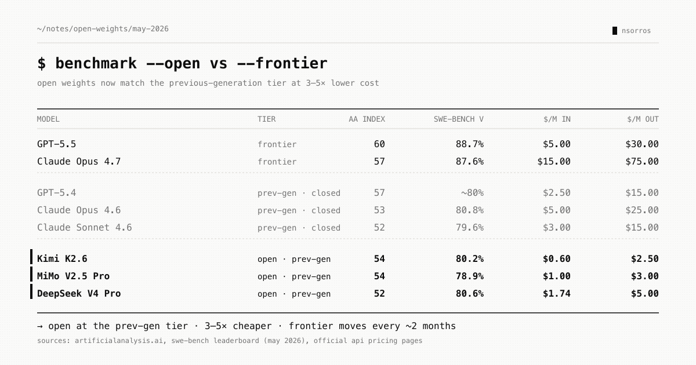

Open weights update
Open weights update — not groundbreaking, but worth noting where we are.
Two tiers exist today: frontier (Opus 4.7, GPT-5.5) and previous generation (Opus 4.6, Sonnet 4.6, GPT-5.4). Open weights — Kimi K2.6, DeepSeek V4 Pro, MiMo V2.5 Pro — now sit at the previous-generation level, at 3-5× lower cost.
The gap used to be much wider. GPT-3.5 → GPT-4 was ~18 months. Open weights spent that whole window playing catch-up to the previous generation. Today the frontier moves every ~2 months — Opus 4.7 shipped 10 weeks after 4.6, GPT-5.5 seven weeks after 5.4 — and open weights are right behind it.
Does the gap still matter? Yes, for some work. For coding and agentic tasks, where marginal frontier capability is load-bearing, no one ships on the previous generation. For extraction, summarization, and most non-agentic LLM work, previous-gen (open or cheaper closed) delivers fine — and the cost savings are real.
